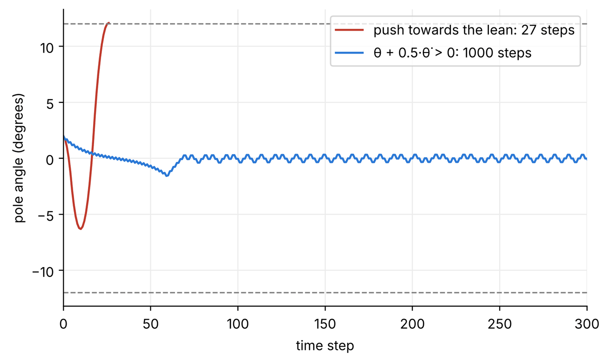
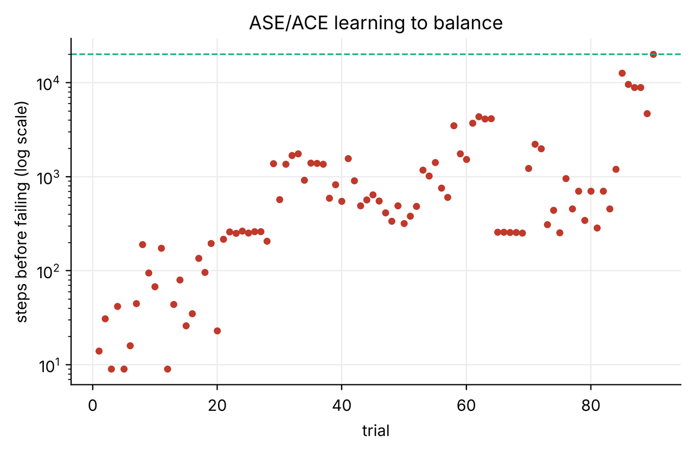
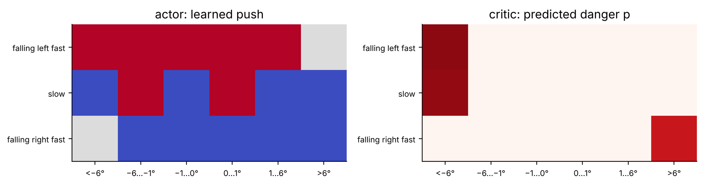

Practice · Pendulum in Python
The inverted pendulum, line by line.
A complete, runnable notebook that simulates the cart-pole, tests hand-written rules, cuts the state into 162 boxes and trains the 1983 actor–critic of Barto, Sutton and Anderson from nothing but a −1 at each failure. Only NumPy and Matplotlib are needed. Hover over (or tap) any line of code to see what it does.
1 Hover over or tap any numbered line of code to highlight its explanation. Every output and chart below was produced by running this exact notebook.
1Import the libraries
- %config InlineBackend.figure_format = "retina"1
- import numpy as np2
- import matplotlib.pyplot as plt3
-
- plt.rcParams["figure.figsize"] = (7, 4)4
- plt.rcParams["axes.spines.top"] = False5
- plt.rcParams["axes.spines.right"] = False5
- plt.rcParams["axes.grid"] = True6
- plt.rcParams["grid.color"] = "#ececec"6
2The cart-pole
Four numbers describe the system: cart position x, cart velocity xd, pole angle th (radians, 0 = upright) and angular velocity thd. Every 0.02 s the controller pushes with +10 N or −10 N. These equations are the world model; the learner will never see them.
- G, M_CART, M_POLE, L_HALF, FORCE, TAU = 9.8, 1.0, 0.1, 0.5, 10.0, 0.021
-
- def step(state, push_right):2
- x, xd, th, thd = state3
- f = FORCE if push_right else -FORCE4
- cos, sin, total = np.cos(th), np.sin(th), M_CART + M_POLE5
- temp = (f + M_POLE * L_HALF * thd**2 * sin) / total6
- thacc = (G * sin - cos * temp) / (L_HALF * (4 / 3 - M_POLE * cos**2 / total))6
- xacc = temp - M_POLE * L_HALF * thacc * cos / total7
- return (x + TAU * xd, xd + TAU * xacc, th + TAU * thd, thd + TAU * thacc)8
-
- def failed(state):9
- return abs(state[0]) > 2.4 or abs(state[2]) > np.radians(12)9
-
- s, t = (0.0, 0.0, np.radians(1), 0.0), 010
- while not failed(s):11
- s, t = step(s, t % 2 == 0), t + 111
- print(f"alternating pushes: fell after {t} steps ({t * TAU:.2f} s)")12
alternating pushes: fell after 42 steps (0.84 s)
3Hand-written rules
The obvious rule, "push towards the side the pole leans", overcorrects. Adding the angular velocity, reacting to where the pole is going, keeps it up.
- def run_rule(rule, theta0_deg=2.0, max_steps=1000):1
- s, angles = (0.0, 0.0, np.radians(theta0_deg), 0.0), []1
- for _ in range(max_steps):1
- s = step(s, rule(s))2
- angles.append(np.degrees(s[2]))2
- if failed(s): break3
- return angles3
-
- lean = lambda s: s[2] > 04
- lean_and_speed = lambda s: s[2] + 0.5 * s[3] > 05
- for rule, name, col in [(lean, "push towards the lean", "#c0392b"), (lean_and_speed, "θ + 0.5·θ̇ > 0", "#2a78d6")]:6
- a = run_rule(rule)6
- plt.plot(a, color=col, label=f"{name}: {len(a)} steps")6
- plt.axhline(12, ls="--", color="grey", lw=1); plt.axhline(-12, ls="--", color="grey", lw=1)7
- plt.xlim(0, 300); plt.xlabel("time step"); plt.ylabel("pole angle (degrees)"); plt.legend()7
- plt.show()8

4The boxes
Each variable is cut into a few intervals: 3 × 3 × 6 × 3 = 162 boxes. The learner is told only the box number.
- def get_box(state):1
- x, xd, th, thd = state1
- bx = 0 if x < -0.8 else 1 if x < 0.8 else 22
- bxd = 0 if xd < -0.5 else 1 if xd < 0.5 else 23
- edges = np.radians([-6, -1, 0, 1, 6])4
- bt = int(np.searchsorted(edges, th, side="right"))5
- btd = 0 if thd < np.radians(-50) else 1 if thd < np.radians(50) else 26
- return bx + 3 * bxd + 9 * bt + 54 * btd7
-
- print("upright and still:", get_box((0, 0, 0.0, 0)), " leaning 8° right and falling right fast:", get_box((0, 0, np.radians(8), 1.5)))8
upright and still: 85 leaning 8° right and falling right fast: 157
5The ASE/ACE actor–critic
Each box has a weight w (the actor's preference: positive pushes right) and a prediction v (the critic: 0 = safe, −1 = failure near). The actor's eligibility e is signed: it remembers which way the box pushed recently. The critic's TD error r_hat tells the actor whether to repeat or reverse what it did.
- def train(seed, critic=True, max_trials=400, solved=20000):1
- rng = np.random.default_rng(seed)1
- alpha, beta, gamma, lam, lam_v = 1000.0, 0.5, 0.95, 0.9, 0.82
- w, v = np.zeros(162), np.zeros(162)3
- lengths = []4
- for trial in range(max_trials):5
- s, e, xbar = (0.0, 0.0, 0.0, 0.0), np.zeros(162), np.zeros(162)6
- box, t = get_box(s), 06
- while True:6
- p_right = 1 / (1 + np.exp(-np.clip(w[box], -50, 50)))7
- y = 1.0 if rng.random() < p_right else 0.08
- e[box] += (1 - lam) * (y - 0.5)9
- xbar[box] += 1 - lam_v10
- s = step(s, y == 1.0); t += 111
- fail = failed(s)11
- r = -1.0 if fail else 0.012
- new_box = None if fail else get_box(s)12
- p_new = 0.0 if fail else v[new_box]13
- r_hat = (r + gamma * p_new - v[box]) if critic else r14
- w += alpha * r_hat * e15
- if critic: v += beta * r_hat * xbar16
- e *= lam; xbar *= lam_v17
- box = new_box17
- if fail or t >= solved: break18
- lengths.append(t)18
- if t >= solved: break19
- return lengths, w, v19
-
- lengths, w, v = train(seed=13)20
- print(f"solved after {len(lengths) - 1} failures" if lengths[-1] >= 20000 else "not solved in 400 trials")20
- plt.semilogy(range(1, len(lengths) + 1), lengths, "o", ms=3.5, color="#c0392b")21
- plt.axhline(20000, ls="--", color="#1baf7a", lw=1)22
- plt.xlabel("trial"); plt.ylabel("steps before failing (log scale)"); plt.title("ASE/ACE learning to balance")22
- plt.show()22
solved after 89 failures

6What did it learn?
A slice through the 162 boxes: cart in the middle and slow. Columns are the pole angle, rows the angular velocity.
- angles = ["<−6°", "−6…−1°", "−1…0°", "0…1°", "1…6°", ">6°"]1
- speeds = ["falling left fast", "slow", "falling right fast"]2
- idx = np.array([[1 + 3 * 1 + 9 * bt + 54 * btd for bt in range(6)] for btd in range(3)])3
- fig, axes = plt.subplots(1, 2, figsize=(10, 3))4
- axes[0].imshow(np.sign(w[idx]), cmap="coolwarm_r", vmin=-1, vmax=1)5
- axes[0].set_title("actor: learned push")5
- axes[1].imshow(v[idx], cmap="Reds_r", vmin=-0.6, vmax=0)6
- axes[1].set_title("critic: predicted danger p")6
- for ax in axes:7
- ax.set_xticks(range(6)); ax.set_xticklabels(angles, fontsize=8); ax.set_yticks(range(3)); ax.set_yticklabels(speeds, fontsize=8); ax.grid(False)7
- plt.tight_layout(); plt.show()8

7Does the critic matter?
Run the actor alone (raw failure signal) and the full actor–critic with ten seeds each.
- for critic in (False, True):1
- results = []1
- for seed in range(1, 11):2
- L, _, _ = train(seed, critic=critic)2
- results.append(len(L) - 1 if L[-1] >= 20000 else None)3
- ok = [x for x in results if x is not None]3
- name = "actor + critic" if critic else "actor alone "3
- print(f"{name}: solved {len(ok)}/10" + (f", median {int(np.median(ok))} failures" if ok else ""))4
actor alone : solved 0/10
actor + critic: solved 9/10, median 64 failures
8Try it yourself
- Change
lam(the actor's trace decay) to 0.5 and to 0.99. How does it change the number of failures needed? - Start every trial from a small random state instead of upright. Does it still learn?
- Implement Q-learning on the same boxes (a table
Q[162, 2], reward −1 at failure, no ε) and compare it with the actor–critic. - Change the reward: −1 at failure and a small penalty for large angles. Is the trained controller calmer?